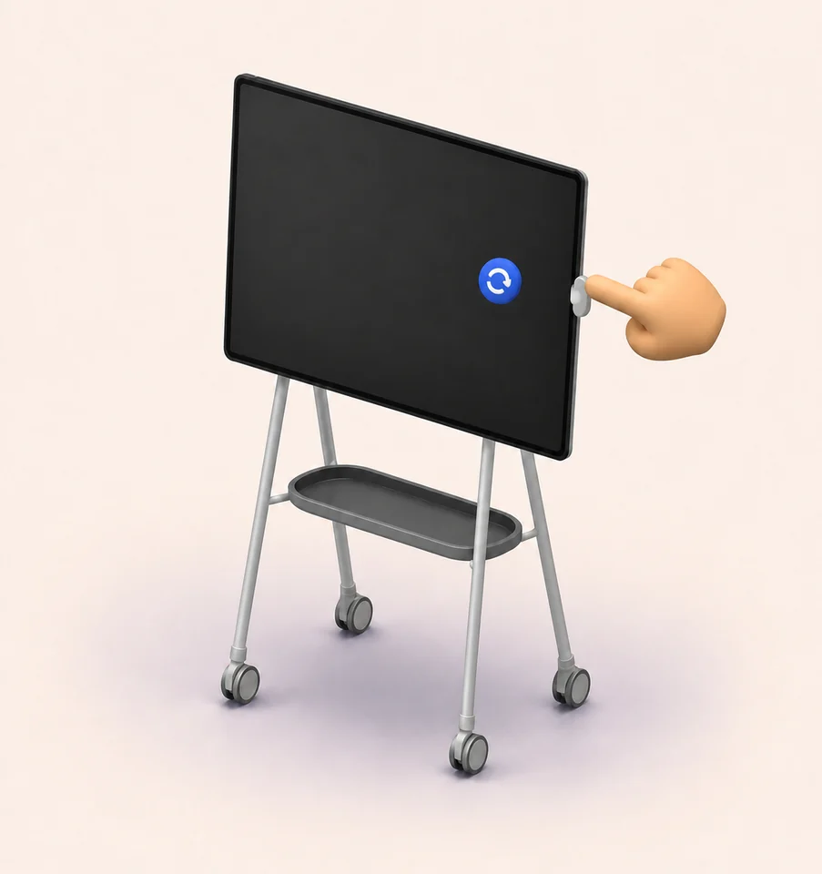
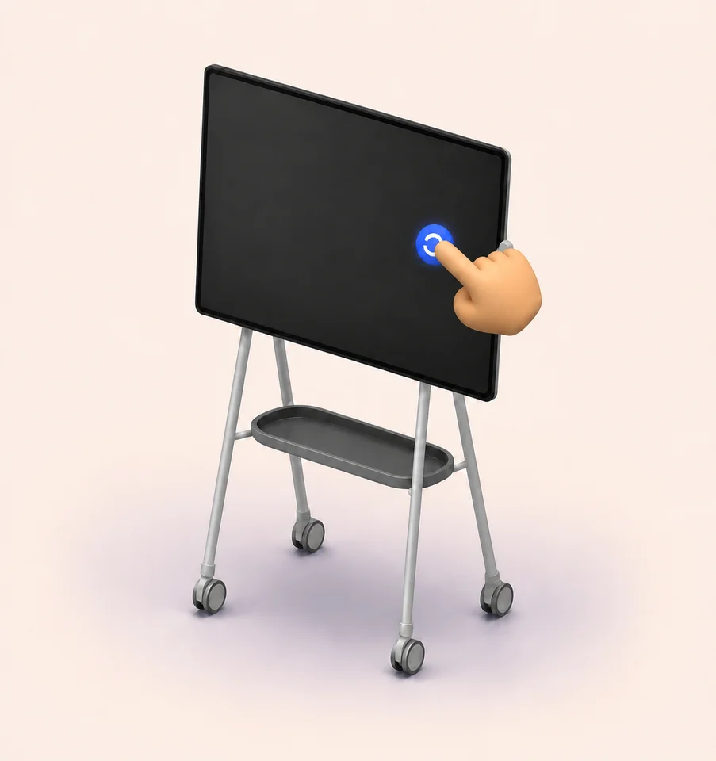
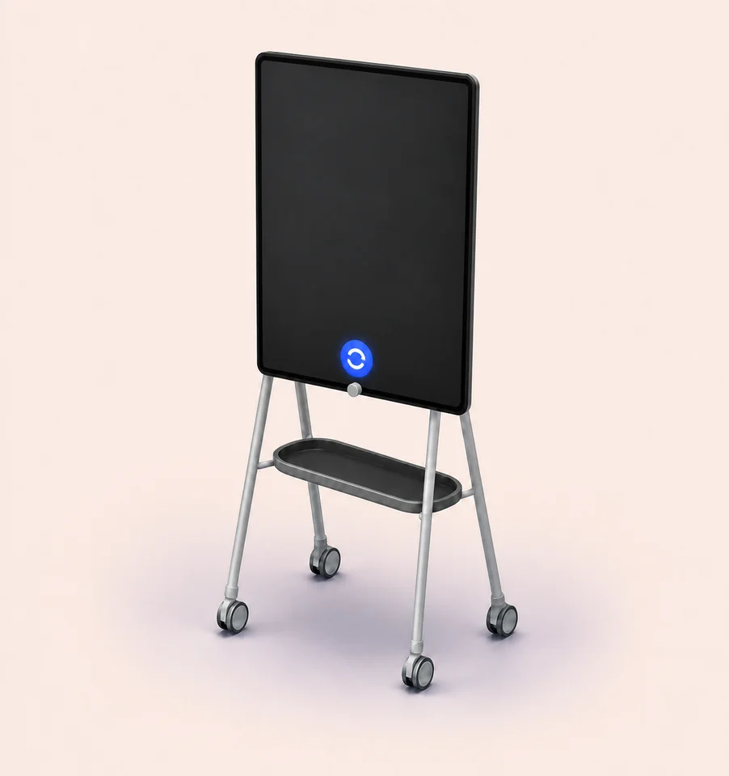

Swivel
Early prototype
One enormous screen. One tiny button.
Touch.
Tap.
Swivel.
Because walking across an 85-inch screen to find Display Settings technically counts as cardio.
Try the tiny one first. If .NET 8 is missing, Windows shows the official install link. Standalone brings the runtime with it.
Windows 10/11 Pro or Enterprise · unsigned prototype · actual Hub reader support still needs a device test



